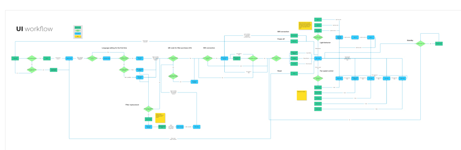

Future generation of UI
Embodied UI design for air products
Designer: Jaeyong Lee
Roles: Design research, UI/UX design, Interaction design
Company: Philips
The project: Future generation of UI for Philips Air products aims to achieve consistent, problem-solving and scalable embodied user interface design principles including air purifiers, FAPU and de/humidifiers. To define it, design has explored not only usable and aesthetically beautiful UI design, but also simple, intuitive and scalable design solutions for different screen types, product ranges, price points, and markets. As the outcome of these holistic approach, I’ve delivered the core principles of future embodied UI designs for diverse air products and visual examples of it.
 UI desgin for future generation of air products
UI desgin for future generation of air products
Background
As the consumers’ awareness about the clean and healthy air dramatically increase during last 5 years, especially in China, Philips Air business has presented diverse air products in the market: air purifier, de/humidifier, FAPU system and on the go products (mask) to react with users’ needs.
Traditional embodied UIs on air products have mainly used numeric display based LED lights to indicate the quality of air: PM2.5, CO2, Allergy, Gas and so on. Also, based on the target user segments and main markets of products, the UI design has been varied; not consistently applied across the air products. Thus, the overall portfolio of Philips Air has not concretely delivered a consistent message to end-users. At the same time, since the strong tradition regarding the numeric display for diverse air attributes hasn’t been validated with users thoroughly, more explorative design approaches to define the way of information visualization were necessary.
Design Process
Understanding users’ experience
To satisfy the needs of business and users, it was necessary taking a holistic design approach to view the whole journey of users. First of all, design has explored the customer decision journey map from the moment of trigger: realizing that users need air product(s) to solve their problems, to building royalty of the brand after using the products in their everyday lives. Also it was necessary investigating how the main target user groups use our products on a daily basis from the moment they wake up from the bed to the time turning off lights before sleep. By doing so, design could understand what are their holistic experience journey, and extract their core pain points and opportunities.
Customer Decision Journey Map Experience Journey Map: daily routineUnderstanding data
Since Philips has seen the value of connected proposition in air category, many of recent air products have been connected via a 3rd party platform allowing visualization of diverse air attributes, controlling air products even outside of home and personalizing its features based on users’ input. However, in terms of understanding the product usage data, it hasn’t been translated into a product interface level. Interpreting the existing data and applying it in tangible visual languages were one of the main focuses of the project.
Understanding consumers’ mind
Most importantly, we needed to know more about the users. Since the previous user studies had a tendency focusing on validating usability of products: testing product features and its understandability, there was lack of core insights of users; what people truly want via air products, and how they understand the air data in their perspectives. To be closer to users’ core needs, our team has conducted various user tests: online and offline, qualitative and quantitative researches. Throughout that, we could truly understand the core fundamentalities of air products: UI should provide ‘reassurance’ that air is clean and healthy, and deliver ‘effortless’ experiences to users.
Focus group researchThere were various design challenges; how to visualize air data, how much information UI should deliver, which air data is prioritized to be shown, when to show the information, how much controls the products should have, which features should be included in product/connected app, and so on.
Concept explorationOne of the main challenge was how to visualize air data. I’ve experimented diverse variations: number, color, gage, graph, emoticon and so on. During the exercise, I always tried to keep the core idea; the visualization of various air indexes should be easily understandable by users.
Design Concept
1. Reassuring air quality: Air data communication
Reassurance of having clean and healthy airVisualizing air data was the one of the main challenges we had. As conclusion, there is no ultimate truth sissifying all users, but it is possible that we can design it based on the target user groups’ core needs. For instance, we can deliver a sophisticated UI design with advanced information for users who want to have more feeling of control regarding their device and their air quality. On the other hand, we can deliver more engaging UI for users who are focused on the emotional benefits.
2. Simple and easy control
Easy controlImagine there are 10 buttons to control 23 different features on a product. It’s not only confusing to figure out which feature is most useful for you, but also people are never going to figure out all the features (indeed, there are some hidden features!). We’ve tried to simplify the product features and controls as much as possible, make it extremely simple by reducing the number of buttons and prioritizing features based on product usage data.
3. Effortless experience
Air prurifier smartly controls your air and provides effortless air experienceAir products are not a mobile that users engage more than 10 minutes every day. Most of current users put the product in their space, and hope that it smartly works by itself. To support the ‘effortless’ experience, we’ve suggested to bring some new features such as ‘auto light adjustment: reducing the light noise during the night time automatically’ and ‘auto filter reset: automatically resetting a filter status when they change it’. By doing so, users do not need to operate the machine every day, and product works by analyzing the environment. For instance, they just need to turn off their room light as they always do, and the machine smartly turns itself to the sleep mode and reduce its light intensity.
4. Information in the right timing
Triggering users in the right information and timingNecessary information such as filter lifetime or filter change should trigger users in the right timing. Otherwise, the information would be simply regarded as ‘a noise’ to users, and it can cause bad result: annoyance and ignorance. To provide only relevant information in the right timing, we’ve studied when is the proper moment to show the most relevant information based on the features, and what are the core messages the product should convey to users to trigger their behavioral reactions.
Design Outcome
 UI on a product
UI on a product
The final design outcome was a document summarizing the core design principles of the future UI in Air category. The document included diverse UI solutions: for LED/LCD screens for different markets, product ranges and price points, which were aligned for the core vision of Air business.


Workflow
Workflow shows the whole functional experience of the product from the moment that a first-time-user plugs-in the product to a time that s/he needs to change filter(s) after 6 months.
 Functional workflow